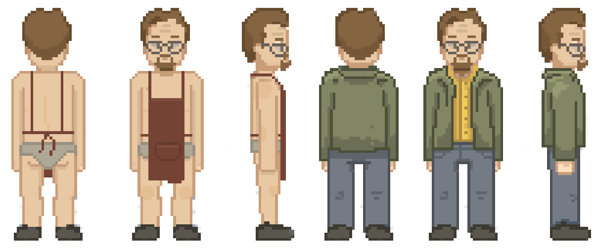

Bad Brains
Breaking Bad
Existo, luego pienso
Campaña
ATENCIÓN: Esta página simula la campaña de microfinanciación de un videojuego ficticio y no representa un producto real. Práctica de Multimedia, 1º GDDV - Curso 22/23 (Móstoles), URJC. La URJC no se hace responsable del contenido expuesto por el autor.
Historia

Breaking Bad - El videojuego, es un videojuego basada en la famosa serie de televisión donde los jugadores podrán entrar en el mundo de Walter White, recorrer sus escenarios y resolver puzzles.
Se trata de una aventura gráfica donde el jugador entrará en la piel de diferentes personajes para conseguir avanzar en la historia.
En la demo actual, el videojuego cuenta con diferentes elementos para aumentar su atráctivo. Entre los cuales podríamos destacar la optimización, ya que es importante que no haya tirones o problemas que puedan romper la inmersión.
La estética también sería un punto a destacar, ya que immita el estilo "retro" de novelas gráficas más antiguas, pero sin llegar al nivel de las máquinas recreativas para poder llegar a un público más joven que está más acostumbrado a los gráficos realistas y detallados. A su vez el entorno está suficientmente detallado como para permitirle al jugador moverse por él e interactuar para que lo sienta como un universo más real
En cuanto al gameplay y controles utilizamos mecánicas conocidas de movimiento e inventario para aumentar la comodidad del jugador y que pueda sentirse en un entorno familiar. El juego se compone principalmente de rompecabezas, donde la destreza mental y la lógica son elementos fundamentarles para avanzar en la trama. A pesar de esto, para aumentar la influencia del jugador, hemos decidido incluir la toma de decisiones como otro aspecto importante. Hay ciertos elementos que pueden cambiar el curso de los acontecimientos, como respuestas o acciones, pero dejaremos que esto lo descubra el jugador.
Sinopsis del trama
Todo empieza cuando Walter White, profesor de química de instituto, que utiliza sus conocimientos para producir sustancias estupefacientes. Mientras está en su caravana "cocinando" es sorprendido por dos traficantes que están interesados en su mercancía, pero no para asociarse. Bajo la presión de los desconocidos que tienen a su socio, Jesse, tomado como rehen. En esta situación tiene que hacer algo para escapar y además salvar a su socio, ¿pero que podría hacer?
Dada la situación Walter tuvo que hacer algo malo, muy malo. ¿Cómo podrá arreglarlo para seguir con vida? desde luego llamar a la policía no es una opción. ¿Hasta donde estarán dispuestos a llegar para encubrir lo ocurrido? ¿Podrán superarlo y seguir con sus vidas, o no soportarán la presión y desistirán? Eso depende de tí.
Proyectos
Walter White
Escenarios
Descargas
Nota: Realmente se descarga una demo del juego realizada por los alumnos, no es de broma
Descargar la demoSobre Nosotros
Somos la compañia Bad Brains, dedicada a la creación de videojuegos, nos componemos por un grupo de universitarios de primer curso de la URJC que estudia Diseño y Desarrollo de Videojuegos y hemos creado este videojuego con el fin de que cualquiera que lo quiera probar pueda disfrutar de la mejor experiencia de juego que hemos podido lograr en nuestro primer videojuego publicado.
Nos enorgullecemos de contar con un equipo formado por desarrolladores, diseñadores y artistas talentosos y apasionados por los videojuegos.
Nos esforzamos por crear juegos innovadores, emocionantes y accesibles para todo tipo de jugadores. Creemos en el poder de los videojuegos para inspirar, entretener y desafiar a los jugadores, y nos esforzamos por crear experiencias de juego únicas y emocionantes. Nos enfocamos en crear juegos que sean visualmente impresionantes, fáciles de aprender y difíciles de dominar.
Preguntas Frecuentes
¿Cuál es la trama del videojuego?
Tratará sobre las primeras aventuras de Walter White, un profesor de quimica, y su exalumno y actual vendedor de droga, Jesse Pinkman, en sus primera aventuras con la creeación y venta de metanfetamina.
¿En qué plataformas estará disponible el videojuego?
Estará tanto para Windows como para Mac
¿Habrá algún tipo de sistema de pistas o ayuda para resolver los rompecabezas?
Se recomienda que se intente pasar el videojuego sin pistas ni ayudas, pero en caso de quedarse sin ideas qué hacer siguiente, habrá una forma para recibir pistas. Recomendamos leer todas las conversaciones ya que en ellas vienen las instrucciones de qué hacer.
Comentarios
Hola que tal
Menuda puta mierda de juego
Meh